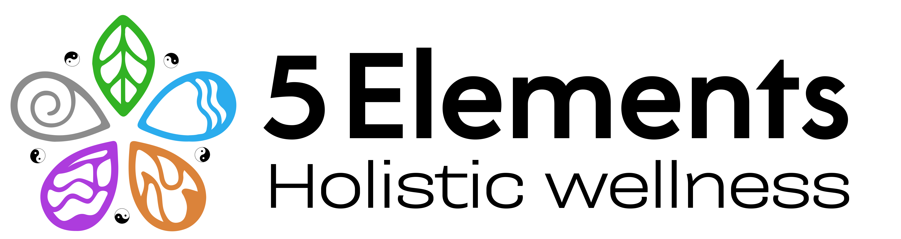

<html xmlns="http://www.w3.org/1999/xhtml">

</html>
<!DOCTYPE html>
<html lang="en">

<head>
    <!-- animation cdn -->
    <link href="https://unpkg.com/aos@2.3.1/dist/aos.css" rel="stylesheet">
    <script src="https://unpkg.com/aos@2.3.1/dist/aos.js"></script>
    <!-- boostrap cdn -->
    <link rel="stylesheet"
        href="https://cdnjs.cloudflare.com/ajax/libs/bootstrap-icons/1.11.3/font/bootstrap-icons.min.css"
        integrity="sha512-dPXYcDub/aeb08c63jRq/k6GaKccl256JQy/AnOq7CAnEZ9FzSL9wSbcZkMp4R26vBsMLFYH4kQ67/bbV8XaCQ=="
        crossorigin="anonymous" referrerpolicy="no-referrer" />
    <script src="https://cdnjs.cloudflare.com/ajax/libs/bootstrap/5.3.3/js/bootstrap.min.js"
        integrity="sha512-ykZ1QQr0Jy/4ZkvKuqWn4iF3lqPZyij9iRv6sGqLRdTPkY69YX6+7wvVGmsdBbiIfN/8OdsI7HABjvEok6ZopQ=="
        crossorigin="anonymous" referrerpolicy="no-referrer"></script>
    <link href="https://cdn.jsdelivr.net/npm/bootstrap@5.3.3/dist/css/bootstrap.min.css" rel="stylesheet">
    <script src="https://cdn.jsdelivr.net/npm/bootstrap@5.3.3/dist/js/bootstrap.bundle.min.js"></script>
    <meta charset="UTF-8">
    <meta name="viewport" content="width=device-width, initial-scale=1.0">
    <title>Achieve balance and harmony at Five Elements Holistic Wellness | Five Elements Holistic Wellness</title>
    <link rel="stylesheet" href="../css/therapies.css">
</head>

<body>
    <div id="whatsapp_contect">
        
    </div>
    <nav>
        <div class="nav-container">
            <div class="left">
                <div class="logo">
                    
                </div>
                <div class="menubar">

                    <label for="menu_icon"><i class="bi bi-list"></i></label>
                </div>
            </div>
            <input type="checkbox" name="" id="menu_icon">
            <div class="right">
                <ul>
                    <li><a href="../index.html">Home</a></li>
                    <li><a href="../about.html">About</a></li>
                    <li><a href="../contect.html">Contact</a></li>
                    <li><a href="#">

                            <label for="mobile_services">Services <span><i
                                        class="bi bi-caret-down-fill"></i></span></label></a>
                        <input type="checkbox" name="" id="mobile_services">
                        <ul>
                            <li><a href="#">Therapies</a></li>
                            <li><a href="garbhsanskar.html">Garbhsanskar</a></li>
                            <li><a href="yoga.html">Yoga</a></li>
                            <li><a href="genetic_brain_maping.html">Genetic Brain Mapping</a></li>
                        </ul>

                    </li>
                    <li><a href="../traditional.html">Traditional Chinese Medicine (TCM)</a></li>
                    <li><a href="../service.html">Services</a></li>
                </ul>
            </div>
        </div>
    </nav>
    <div class="web-width">
        <main>
            <div class="theraoies_container">
                <div class="head">
                    <div class="circle"></div>
                    <div class="text">
                        <h1>Therapies</h1>
                    </div>
                    <div class="line_head"></div>
                </div>
                <!-- Main content -->
                <div class="main_content">
                    <!-- -------1.MERU CHIKITSHA------------ -->
                    <div class="content">
                        <div class="head">
                            <h1>1.MERU CHIKITSHA</h1>
                        </div>
                        <ul>
                            <li>Meru Chikitsa is a profound healing technique rooted in
                                ancient Ayurvedic practices. This therapeutic method involves
                                gentle touches on the body, utilizing the spine as a gateway
                                to access our deepest nature. By enhancing awareness and
                                promoting a sense of well-being, Meru Chikitsa aims to
                                eliminate diseased conditions, offering a holistic approach to
                                health.</li>
                            <li>
                               <span class="first_child_letter">Meaning of "Meru Chikitsa":</span> The term "Meru" translates to
                                spine, while "chikitsa" means seƫ ng right. Essentially, Meru
                                Chikitsa is the art of aligning the spine to restore balance and
                                harmony within the body.
                            </li>
                            <li><span class="first_child_letter">Key Elements:</span> Meru Chikitsa incorporates mechanical,
                                psychological, bio-force, biochemical, and nervous aspects of
                                spinal care. This ancient healing system involves spinal
                                manipulation, breathing techniques, and gentle pressure or
                                massage. The goal is to balance nerve impulses, blood flow,
                                and other body fluid currents, thereby restoring harmony to
                                the entire body.
                            </li>
                            <li class="sub_head">Benefits of Meru Chikitsa:</li>
                            <li> Enhanced Awareness: By working with the spine, Meru
                                Chikitsa enhances awareness, promoting a deeper
                                connection with one's inner self.
                            </li>
                            <li> <span class="first_child_letter">Well-Being: </span> technique aims to bring about a sense of
                                well-being, eliminating diseased conditions and fostering
                                overall health.</li>
                            <li> <span class="first_child_letter">Prana Boost:</span> Meru Chikitsa is reported to boost and
                                balance the flow of "Prana," the life force energy, facilitating
                                longer periods of meditation.</li>
                            <li><span class="first_child_letter">Applicability:</span> Meru Chikitsa is a versatile healing method
                                suitable for everyone. Whether one is seeking relief from
                                specific health concerns or simply aiming to enhance overall
                                well-being, the practice is beneficial for all individuals.
                            </li>
                            <li><span class="first_child_letter">Mechanism:</span> Meru Chikitsa operates on a subtle level,
                                addressing the meridians, electric circuits in the body, and
                                atta ending to any mismatches. It works on body fluids, spinal
                                fluids, and the nervous system, influencing bone structures
                                and positions. Importantly, it is not exclusive to unhealthy
                                individuals; even those in good health can experience Meru
                                Chikitsa to feel betta er and maintain balance.</li>
                            <li>In essence, Meru Chikitsa represents a holistic and ancient
                                approach to spinal care within the Ayurvedic tradition. Its
                                gentle yet profound techniques aim to align the spine, restore
                                balance, and promote overall well-being for individuals at any
                                stage of health.</li>
                        </ul>
                        <!-- 2.VAGUS WELLNESS THERAPY - The Key to Holistic Wellness---------------- -->
                        <div class="head">
                            <h1>2.VAGUS WELLNESS THERAPY - The Key to Holistic Wellness
                            </h1>
                        </div>
                        <ul>
                            <li>The vagus nerve, also known as the tenth cranial nerve or CN
                                X, is a crucial component of the autonomic nervous system. It
                                is the longest of the cranial nerves and plays a vital role in
                                regulating numerous bodily functions. The vagus nerve is a
                                paired nerve, meaning there is one on each side of the body,
                                and it extends from the brainstem through the neck and into
                                the chest and abdomen.
                            </li>
                            <li  class="sub_head">Key Features and Functions</li>
                            <li><span class="first_child_letter">1. Autonomic Nervous System Regulation: </span> vagus nerve is
                                a major component of the autonomic nervous system,
                                controlling involuntary bodily functions.
                            </li>
                            <li><span class="first_child_letter">2. Parasympathetic Nervous System:</span> It is associated with the
                                parasympathetic nervous system, promoting the "rest and
                                digest" response.</li>
                            <li><span class="first_child_letter">3. Heart Rate Regulation:</span> The vagus nerve regulates heart
                                rate and cardiovascular health.
                            </li>
                            <li><span class="first_child_letter">4. Respiratory Function:</span> It influences respiratory function
                                and controls breathing.
                            </li>
                            <li><span class="first_child_letter">5. Digestive Processes:</span> The vagus nerve is extensively
                                involved in the regulation of digestive processes.</li>
                            <li><span class="first_child_letter">6. Inflammatory Response Modulation:</span> It helps modulate
                                the inflammatory response.</li>
                            <li><span class="first_child_letter">7. Voice and Speech:</span> Connected to the muscles of the larynx,
                                it plays a role in voice modulation.</li>
                            <li><span class="first_child_letter">8. Gag Reflex:</span> It is responsible for the gag reflex, a protective
                                mechanism.
                            </li>

                            <li  class="sub_head">Benefits of the Session:
                            </li>
                            <li> <span class="first_child_letter">Comprehensive Wellness:</span> The program provides a holistic
                                approach to wellness, addressing physical, mental, emotional,
                                and spiritual aspects.</li>
                            <li> <span class="first_child_letter">Disease Prevention:</span> By leveraging Vagus nerve stimulation
                                and mind-body techniques, the session contributes to disease
                                prevention.</li>
                            <li> <span class="first_child_letter">Symptom Relief:</span> Individuals experiencing stress, anxiety,
                                digestive issues, chronic pain, and other symptoms may find
                                relief through this session.</li>
                            <li> <span class="first_child_letter">Optimization for Healthy Individuals:</span> Even those in good
                                health can benefit from the session to optimize and enhance
                                their overall well-being.</li>
                            <li  class="sub_head">Who will take the session?</li>
                            <li>This session is open to anyone seeking to improve their
                                health and elevate their well-being quotient. It is especially
                                beneficial for individuals dealing with chronic health issues on
                                physical, mental, emotional, and spiritual levels. Additionally,
                                the program aids in disease prevention. If you are
                                experiencing symptoms such as stress, anxiety, digestive
                                issues, or chronic inflammation, the Vagus wellness therapy
                                session can be instrumental in your journey towards
                                wellness.</li>
                        </ul>
                        <!-- 3.MUDRA THERAPY- Unlocking Healing through Hand Gestures------------------- -->
                        <div class="head">
                            <h1>3.MUDRA THERAPY- Unlocking Healing through Hand
                                Gestures
                            </h1>
                        </div>
                        <ul>
                            <li>Mudra Therapy is an ancient healing practice rooted in
                                traditional Indian knowledge systems, particularly in the
                                realms of yoga and Ayurveda. The term "mudra" is derived
                                from the Sanskrit word meaning "seal" or "gesture." Mudras
                                involve specific hand positions or gestures that are believed
                                to influence the flow of energy in the body and promote
                                various physical, mental, and spiritual benefits.</li>
                            <li><span class="first_child_letter">Historical Roots:</span> The origins of Mudra Therapy can be traced
                                back thousands of years to ancient India, where it was
                                integrated into diverse spiritual and healing traditions. The
                                ancient Indian scriptures, including the Vedas and
                                Upanishads, reference the use of mudras as a means to
                                enhance meditation, channel energy, and achieve higher
                                states of consciousness.
                            </li>
                            <li><span class="first_child_letter">Yogic Connection:</span> Mudras are closely linked to the practice of
                                yoga, forming an integral part of the yogic journey. Yogis and
                                sages incorporated mudras into their meditation and breath
                                control practices to deepen their connection with the divine
                                and to atta ain spiritual insights. Over time, these hand
                                gestures evolved into a therapeutic modality with
                                applications beyond the spiritual realm.</li>
                            <li><span class="first_child_letter">Ayurvedic Influence:</span> In Ayurveda, the traditional system of
                                medicine in India, mudras are considered a means to balance
                                the doshas (Vata, Pitta a, and Kapha) and restore harmony to
                                the body and mind. Each finger corresponds to one of the five
                                elements, and by manipulating the fingers, practitioners aim
                                to influence the elemental balance within the body.
                            </li>
                            <li><span class="first_child_letter">Philosophical Underpinnings:</span> Mudra Therapy is grounded in
                                the philosophy that the human body is a microcosm of the
                                universe, and the hands serve as a powerful connection to
                                cosmic energies. By assuming specific hand postures,
                                individuals can tap into these energies, fostering healing,
                                balance, and well-being.</li>
                            <li><span class="first_child_letter">Application and Practice:</span> Mudras are diverse and can be
                                practiced in conjunction with meditation, pranayama (breath
                                control), or as standalone therapeutic techniques. Each
                                mudra is believed to have unique effects on the body and
                                mind. Some mudras aim to alleviate physical ailments, while
                                others focus on mental and emotional well-being.
                            </li>
                            <li><span class="first_child_letter">Modern Resurgence:</span> In recent times, there has been a
                                resurgence of interest in Mudra Therapy, not only within
                                traditional Eastern practices but also in the context of
                                complementary and alternative medicine globally.
                                Researchers and practitioners explore the potential health
                                benefits of mudras, ranging from stress reduction to
                                supporting specific medical conditions.
                            </li>
                            <li>As Mudra Therapy continues to bridge ancient wisdom with
                                contemporary well-being practices, its rich history serves as a
                                testament to the enduring relevance of these hand gestures
                                as vehicles for healing and self-discovery.</li>
                        </ul>
                        <!-- 4.ACUPUCTURE - A Time-Honoured Healing Art----------- -->
                        <div class="head">
                            <h1>4.ACUPUCTURE - A Time-Honoured Healing Art
                            </h1>
                        </div>
                        <ul>
                            <li>Acupuncture is an ancient healing practice that originated in
                                China over 2,500 years ago and has since become a widely
                                recognized form of complementary and alternative medicine.
                                Rooted in traditional Chinese medicine (TCM), acupuncture
                                involves the insertion of thin needles into specific points on
                                the body to stimulate energy flow, balance vital forces, and
                                promote the body's natural healing processes.</li>
                            <li> <span class="first_child_letter">Historical Roots:</span> The history of acupuncture dates back to
                                the ancient Chinese civilization, where it emerged as a key
                                component of traditional medical practices. The foundational
                                text of acupuncture, the "Huangdi Neijing" or Yellow
                                Emperor's Inner Canon, provided the theoretical framework
                                for understanding the body's energy (Qi) and the pathways
                                (meridians) through which it flows. Acupuncture was
                                historically used to maintain balance within the body and
                                address various ailments.</li>
                            <li> <span class="first_child_letter">Spread of Acupuncture:</span> Over centuries, acupuncture spread
                                beyond China and became integrated into the medical
                                traditions of other East Asian cultures, including Japan and
                                Korea. Acupuncture gained recognition globally in the 20th
                                century, and its popularity expanded as practitioners and
                                researchers explored its effi cacy in addressing a wide range of
                                health conditions.</li>
                            <li> <span class="first_child_letter">Philosophical Foundations:</span> Central to acupuncture is the
                                concept of Qi, the vital energy that flows through the body
                                along specific pathways or meridians. According to traditional
                                Chinese medicine, disruptions or imbalances in the flow of Qi
                                can lead to illness or discomfort. Acupuncture aims to restore
                                harmony by manipulating the flow of Qi through the insertion
                                of needles at precise points on the body.</li>

                            <li  class="sub_head">Benefits of Acupuncture:</li>

                            <li><span class="first_child_letter">1. Pain Management:</span> Acupuncture is renowned for its
                                effectiveness in managing various types of pain, including
                                chronic pain, migraines, and musculoskeletal disorders.</li>
                            <li><span class="first_child_letter">2. Stress Reduction:</span> Many individuals turn to acupuncture for
                                stress relief and relaxation. The therapy is believed to help
                                regulate the nervous system, promoting a sense of calm.</li>
                            <li><span class="first_child_letter">3. Improved Sleep:</span> Acupuncture has shown promise in
                                addressing sleep disorders and promoting betta er sleep
                                quality.</li>
                            <li><span class="first_child_letter">4. Immune System Support:</span> Some studies suggest that
                                acupuncture may enhance the immune system's function,
                                helping the body defend against infections.</li>
                            <li><span class="first_child_letter">5. Digestive Health:</span> Acupuncture is employed to address
                                digestive issues such as irritable bowel syndrome (IBS) and
                                nausea.</li>
                            <li><span class="first_child_letter">6. Mental Health:</span> Acupuncture is increasingly recognized for
                                its role in supporting mental health, including the
                                management of anxiety and depression.</li>
                            <li><span class="first_child_letter">7. Fertility and Women's Health:</span> Acupuncture is often used
                                as part of fertility treatments and can provide relief for
                                women's health concerns such as menstrual disorders and
                                menopausal symptoms.</li>
                            <li><span class="first_child_letter">8.Modern Integration:</span> In the modern era, acupuncture has
                                gained acceptance within mainstream healthcare systems in
                                many countries. It is often used in conjunction with
                                conventional medicine to provide holistic and patient-centered care. Research continues
                                to explore the
                                mechanisms of acupuncture and its applications across
                                various medical specialties.</li>
                            <li>As acupuncture continues to evolve, its enduring history and
                                diverse benefits underscore its significance as a therapeutic
                                modality that transcends cultural and geographical
                                boundaries.</li>
                        </ul>
                        <!-- 5.VARMA Balancing Energy for Holistic Healing----------------- -->
                        <div class="head">
                            <h1>5.VARMA Balancing Energy for Holistic Healing</h1>
                        </div>
                        <ul>
                            <li>Varma Therapy is a traditional healing practice that originated
                                in ancient South India, specifically in the Tamil region. Rooted
                                in the Siddha system of medicine, Varma Therapy focuses on
                                restoring balance to the body's vital energy (prana) by
                                stimulating specific points called "Varma points" or
                                "Marmas." This therapeutic modality encompasses a range of
                                manual techniques and energy-balancing principles to
                                promote overall well-being.</li>
                            <li><span class="first_child_letter">Historical Roots:</span> Varma Therapy has a rich history dating
                                back thousands of years. Its origins are closely associated
                                with the Siddha tradition, one of the oldest systems of
                                medicine in India. Ancient Siddha texts, including the
                                "Agastya Samhita," provide detailed insights into the
                                principles and practices of Varma Therapy. Over the
                                centuries, the knowledge of Varma has been passed down
                                through lineage-based teachings.</li>
                            <li><span class="first_child_letter">Philosophical Foundations:</span> The philosophy behind Varma
                                Therapy is deeply rooted in the understanding of prana, the
                                life force energy that flows through the body. According to
                                Varma principles, disruptions or blockages in the flow of
                                prana can lead to physical and mental imbalances. The
                                therapy aims to identify and address these imbalances
                                through precise manipulations of Varma points.</li>
                            <li  class="sub_head">Key Concepts:</li>
                            <li><span class="first_child_letter">1.Varma Points:</span> These are specific points on the body where
                                prana is concentrated, and they are believed to be vital for
                                maintaining health. Varma Therapy involves the precise
                                application of pressure, massage, and manipulation on these
                                points.</li>
                            <li><span class="first_child_letter">2.Energy Channels (Nadis):</span> Varma Therapy recognizes the
                                existence of energy channels or nadis through which prana
                                flows. Balancing these nadis is a fundamental aspect of the
                                therapy.
                            </li>
                            <li><span class="first_child_letter">3.Marma Points:</span> Varma Therapy shares similarities with
                                Ayurvedic Marma Therapy, where certain points are
                                considered vital areas that, when stimulated, can influence
                                the flow of energy and promote healing.</li>
                            <li  class="sub_head">Benefits of Varma Therapy:</li>
                            <li><span class="first_child_letter">1.Improved Circulation:</span> The therapy is believed to enhance
                                blood and energy circulation throughout the body.</li>
                            <li><span class="first_child_letter">2.Stress Reduction:</span> Varma manipulations can help release
                                tension and promote relaxation, contributing to stress
                                reduction.</li>
                            <li><span class="first_child_letter">3.Balancing Energy:</span> By working on Varma points, the therapy
                                aims to balance the flow of prana and harmonize the body's
                                energy</li>
                            <li><span class="first_child_letter">4.Enhanced Flexibility:</span> Varma Therapy includes stretches and
                                movements that can contribute to improved flexibility and
                                joint mobility.</li>
                            <li><span class="first_child_letter">5.Holistic Healing:</span> The therapy is designed to address
                                physical, mental, and emotional aspects of well-being,
                                supporting holistic healing.</li>
                            <li><span class="first_child_letter">Contemporary Integration:</span> While Varma Therapy has its
                                roots in ancient traditions, it continues to be practiced in
                                South India and has gained recognition as part of traditional
                                healthcare systems. In contemporary times, efforts are being
                                made to integrate Varma Therapy with other complementary
                                and alternative medicine practices for a more comprehensive
                                approach to health and wellness.</li>
                            <li>Varma Therapy stands as a testament to the enduring
                                wisdom of traditional healing practices, offering a unique
                                perspective on energy balance and holistic well-being.
                            </li>
                        </ul>
                        <!-- 6.THETA HEALING Tapping into the Power of the Subconscious Mind------------------ -->
                        <div class="head">
                            <h1>6.THETA HEALING Tapping into the Power of the Subconscious Mind</h1>
                        </div>
                        <ul>
                            <li>Theta Healing is a holistic healing modality that combines
                                elements of spirituality, energy work, and psychology to
                                facilitate transformation at the subconscious level. Developed
                                by Vianna Stibal in the 1990s, Theta Healing is based on the
                                premise that the brain operates in different brainwave states,
                                and by accessing the theta brainwave state, individuals can
                                identify and transform limiting beliefs, patta erns, and
                                emotions.</li>
                            <li><span class="first_child_letter">Historical Roots:</span> Theta Healing was founded by Vianna Stibal,
                                a naturopath and intuitive healer. The origin of Theta Healing
                                is often traced to Vianna's personal journey of overcoming a
                                health challenge. During a meditation, she discovered the
                                ability to enter a theta brainwave state, which she utilized to
                                facilitate profound healing within herself. This experience led
                                to the development of Theta Healing as a modality for
                                personal and spiritual growth.</li>
                            <li  class="sub_head">Key Concepts:</li>
                            <li><span class="first_child_letter">1.Theta Brainwave State:</span> Theta Healing revolves around the
                                concept of accessing the theta brainwave state, which is
                                associated with deep relaxation and creativity. In this state,
                                the subconscious mind becomes more accessible, allowing
                                for profound healing and transformation.</li>
                            <li><span class="first_child_letter">2. Belief Systems:</span> The modality emphasizes the influence of
                                belief systems on health and well-being. Practitioners work
                                with clients to identify and change limiting beliefs that may
                                be contributing to physical, emotional, or spiritual challenges.</li>
                            <li><span class="first_child_letter">3. Energy Healing:</span> Theta Healing incorporates energy healing
                                techniques, with practitioners channelling healing energy to
                                facilitate the release of negative patta erns and promote
                                balance within the body.</li>
                            <li class="sub_head">Benefits of Theta Healing:</li>
                            <li><span class="first_child_letter">1.Belief Restructuring:</span> Theta Healing aims to identify and
                                transform limiting beliefs, fostering positive changes in
                                thought patta erns and behaviours.</li>
                            <li><span class="first_child_letter">2.Emotional Healing:</span> The modality addresses emotional
                                wounds and traumas, promoting emotional release and
                                healing.</li>
                            <li><span class="first_child_letter">3.Physical Healing:</span> By addressing the emotional and
                                energetic aspects, Theta Healing is believed to contribute to
                                physical healing and well-being.</li>
                            <li><span class="first_child_letter">4.Manifestation:</span> Theta Healing teaches techniques for
                                manifesting positive outcomes by aligning the mind with
                                desired goals and intentions.</li>
                            <li><span class="first_child_letter">5.Spiritual Growth:</span> Many individuals turn to Theta Healing
                                for spiritual exploration, seeking to deepen their connection
                                with their higher self or divine consciousness.</li>
                            <li><span class="first_child_letter">6.Stress Reduction:</span> Accessing the theta state induces deep
                                relaxation, contributing to stress reduction and promoting a
                                sense of calm.</li>
                            <li><span class="first_child_letter">7.Self-Discovery:</span> Theta Healing encourages individuals to
                                explore their subconscious mind, leading to insights and self-
                                discovery.</li>
                            <li><span class="first_child_letter">Contemporary Application:</span> Theta Healing has gained
                                popularity worldwide and is utilized by practitioners for
                                various purposes, including personal development, spiritual
                                growth, and complementary support for physical and
                                emotional healing. Training programs and workshops are
                                available to individuals interested in learning and applying
                                Theta Healing techniques.</li>
                            <li>Theta Healing stands at the intersection of science,
                                spirituality, and self-empowerment, offering a unique
                                approach to holistic well-being by tapping into the
                                transformative potential of the subconscious mind.</li>
                        </ul>
                        <!-- 7. BACH FLOWER THERAPY - Harmonizing Emotions for Holistic Well-being -->
                        <div class="head">
                            <h1>7. BACH FLOWER THERAPY - Harmonizing Emotions for Holistic Well-being</h1>
                        </div>
                        <ul>
                            <li>Bach Flower Remedies, created by Dr.Edward Bach in the
                                early 20th century, is a natural and gentle form of vibrational
                                medicine. These remedies are derived from the essence of
                                flowers and are designed to address emotional imbalances,
                                supporting individuals in achieving emotional harmony and
                                overall well-being.</li>
                            <li><span class="first_child_letter">Historical Roots:</span> Dr.Edward Bach, a British physician and
                                bacteriologist, developed Bach Flower Remedies in the 1920s
                                and 1930s. Driven by a holistic approach to health, he
                                believed that emotional well-being was crucial for preventing
                                and treating physical illnesses. Dr. Bach identified 38 flower
                                essences, each associated with specific emotional states, and
                                developed a unique system to harness their healing
                                properties.</li>
                            <li  class="sub_head">Key Concepts:</li>
                            <li><span class="first_child_letter">1. Vibrational Healing:</span> Bach Flower Remedies operate on the
                                principle of vibrational healing, where the energetic imprint
                                of flowers is believed to influence and balance emotional
                                states.</li>
                            <li><span class="first_child_letter">2. Emotional Imbalances</span>: The remedies are designed to
                                address emotional imbalances and negative emotional states
                                that may contribute to physical ailments.</li>
                            <li><span class="first_child_letter">3. Gentle and Safe:</span> Bach Flower Remedies are considered
                                safe, non-toxic, and suitable for all ages, including children
                                and pets.</li>
                            <li><span class="first_child_letter">4. Individualized Treatment:</span> Dr. Bach emphasized the
                                importance of individualized treatment. Remedies are chosen
                                based on a person's emotional state rather than the specific
                                physical symptoms they may be experiencing.</li>
                            <li class="sub_head">Benefits of Bach Flower Remedies:</li>
                            <li><span class="first_child_letter">1. Emotional Harmony:</span> The primary goal of Bach Flower
                                Remedies is to restore emotional harmony, helping
                                individuals cope with stress, anxiety, and other negative
                                emotions.</li>
                            <li><span class="first_child_letter">2. Stress Reduction:</span> Bach remedies can be effective in
                                reducing stress and promoting a sense of calm.
                            </li>
                            <li><span class="first_child_letter">3. Improved Mood:</span> The essences are used to uplift and
                                stabilize mood, addressing feelings of sadness, despair, or
                                irritability.</li>
                            <li><span class="first_child_letter">4. Support for Life Transitions:</span> Bach Flower Remedies can
                                provide support during life changes, such as job transitions,
                                relationship challenges, or loss.</li>
                            <li><span class="first_child_letter">5. Enhanced Well-being:</span> By addressing emotional well-being,
                                Bach remedies contribute to an overall sense of well-being
                                and balance.</li>
                            <li><span class="first_child_letter">6. Complementary to Other Therapies:</span> Bach Flower
                                Remedies can be used alongside other conventional or
                                alternative therapies without interference.</li>
                            <li><span class="first_child_letter">Contemporary Application:</span> Bach Flower Remedies are widely
                                used today, and practitioners often recommend specific
                                essences based on an individual's emotional state. The
                                remedies are available in various forms, including tinctures,
                                creams, and sprays. They are easily accessible and are
                                commonly used for self-help purposes.
                            </li>
                            <li>As a gentle and natural approach to emotional well-being,
                                Bach Flower Remedies continue to be embraced by
                                individuals seeking holistic solutions for their emotional and
                                mental health. The simplicity and safety of these remedies
                                make them an atta ractive option for those interested in a
                                holistic and flower-based approach to healing.</li>
                        </ul>
                        <!-- 8.NATURE CURE -Embracing Natural Healing for Holistic Wellness-------------- -->
                        <div class="head">
                            <h1>8.NATURE CURE -Embracing Natural Healing for Holistic Wellness </h1>
                        </div>
                        <ul>
                            <li>Nature Cure represents a distinctive and holistic approach to
                                understanding health, steering clear of conventional and
                                medicinal perspectives. It rejects the conventional symptom-centric analysis,
                                prioritizing a more comprehensive
                                understanding of an individual's health that goes beyond the
                                surface-level presence or absence of symptoms. At its core,
                                Nature Cure is designed to establish an optimal environment
                                for the human body to operate at its peak, placing a strong
                                emphasis on prevention rather than cure.</li>
                            <li>The fundamental principle underlying Nature Cure is a
                                commitment to addressing the root causes of health issues,
                                rather than merely alleviating superficial symptoms. In this
                                paradigm, "disease" is seen as a by-product of deviating from
                                the body's natural requirements. The authentic cure lies in
                                rectifying these deviations rather than relying solely on
                                medications to suppress symptoms. This approach places
                                paramount importance on unraveling the foundational causes
                                of ailments, aiming for a more profound and lasting healing
                                rather than addressing only the outward manifestations.</li>
                        </ul>
                        <!-- -----------------9.AYURVEDIC NUTRITION:------------------- -->
                        <div class="head">
                            <h1>9.AYURVEDIC NUTRITION: </h1>
                        </div>
                        <ul>
                            <li>Ayurvedic nutrition is an integral component of Ayurveda, an
                                ancient holistic system of medicine that originated in India
                                thousands of years ago. Ayurveda emphasizes the
                                interconnectedness of the mind, body, and spirit, and it
                                recognizes that individuals are unique in terms of their
                                constitution, known as doshas. Ayurvedic nutrition focuses
                                on balancing these doshas—Vata, Pitta a, and Kapha—to
                                promote overall health and prevent diseases.</li>
                            <li  class="sub_head">Key Principles of Ayurvedic Nutrition:</li>
                            <li class="sub_head">Understanding Doshas:</li>
                            <li><span class="first_child_letter">Vata:</span> Associated with air and space, responsible for
                                movement and communication.</li>
                            <li><span class="first_child_letter">Pitta a:</span> Linked to fire and water, governing digestion and
                                metabolism.
                            </li>
                            <li><span class="first_child_letter">Kapha:</span> Aligned with earth and water, regulating stability
                                and structure.</li>
                            <li class="sub_head">Personalized Nutrition:</li>
                            <li>Ayurvedic nutrition is highly individualized, considering a
                                person's unique dosha composition, current health status,
                                age, and environmental factors.
                            </li>
                            <li class="sub_head">Six Tastes (Rasas):</li>
                            <li>Ayurveda recognizes six tastes: sweet, sour, salty, bitta er,
                                pungent, and astringent. A balanced meal includes all six
                                tastes to satisfy the palate and support dosha balance.
                            </li>
                            <li class="sub_head">Seasonal Eating:</li>
                            <li>Ayurvedic nutrition adapts to the changing seasons,
                                recognizing that different foods and cooking styles are
                                suitable for different times of the year.
                            </li>
                            <li class="sub_head">Digestive Fire (Agni):</li>
                            <li>Maintaining a strong digestive fire is crucial. Foods that
                                enhance digestion are recommended, and overeating or
                                consuming incompatible food combinations is discouraged.</li>
                            <li class="sub_head">Choosing Foods Based on Doshas:</li>
                            <li>Individuals with a predominance of Vata may benefit
                                from warm, grounding foods.</li>
                            <li>Pitta a-dominant individuals may benefit from cooling,
                                hydrating foods.</li>
                            <li>Kapha-dominant individuals may benefit from light,
                                warming foods.</li>
                            <li class="sub_head">Herbal Support:</li>
                            <li>Ayurvedic herbs and spices are often incorporated into meals
                                for their therapeutic properties. Common examples include
                                turmeric, ginger, and cumin.</li>
                        </ul>
                    </div>
                </div>
            </div>
        </main>
        <!-- link script src -->
        <script src="../javascript/navbar.js"></script>

        <!-- animation action script  -->
        <script>
            AOS.init();
        </script>
</body>

</html>